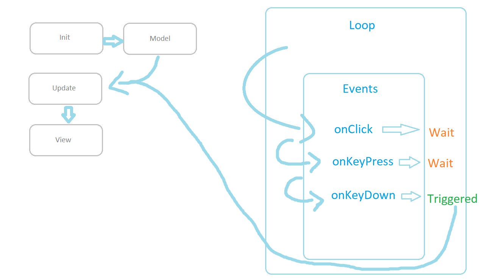

Qu'est-ce que je peux trouver ?
Ce "livre" n'a rien d'un livre, en réalité. Lorsque je débute dans un langage, j'ai toujours tendance à vouloir archiver le plus d'informations possibles à son sujet, notamment pour clarifier des choses que je n'ai pas saisi. Pour faire court, vous pourrez trouver des réponses à des questions / sujets divers et variés, mais ne vous attendez pas à une organisation digne d'un guide. Il n'y a pas d'ordre précis, donc n'hésitez pas à vous servir du moteur de recherche. Bonne lecture !
Les fonctions
Les déclarations
La déclaration d'une fonction en Elm est plutôt simple... il suffit d'écrire son identificateur suivi d'un =. La dernière expression est la valeur qui sera renvoyée.
votreFonction = "La valeur de renvoi est une String"
La communauté Elm (ainsi que son développeur) ont, cependant, tendance à "étaler" la déclaration ainsi que le corps des fonctions sur plusieurs lignes.
votreFonction =
"La valeur de renvoi est une String"
Annotations dédiées aux signatures
Le compilateur du langage Elm supporte les annotations permettant de typer la signature d'une fonction, réduisant forcément le temps de débogage. Toutefois, ce type d'annotations peut être relativement ambiguë lorsque vous travaillez avec pour la première fois.
Exemple
Pour une fonction nommée foo prenant deux Int en paramètre et renvoyant une chaîne de caractères (String), l'annotation devrait ressembler à ça:
foo: Int -> Int -> String
Ne vous méprenez pas, les -> ne signifient pas obligatoirement un renvoi de valeur. Seule la dernière valeur de l'annotation représente le type de données renvoyé. Cela donnerait:
ag1 -> arg2 -> valeur de retour
Architecture
Bien que dénuée d'une réelle organisation, cette section est dédiée à toute les questions que je pourrais me poser à propos du fonctionnement interne du langage Elm ainsi que des outils permettant d'appliquer les modèles MV*.
Comment le modèle est-il mis à jour ?

Dernièrement (le 11 avril 2020 donc), cette question me tourmentait depuis quelques jours; toujours très débutant avec Elm (en avouant au passage que la syntaxe me déconcerte un peu), j'ai encore des difficultés à me modéliser où, exactement, mon modèle est traité et mis à jour lorsqu'il transite entre les trois grandes "phases" de la boucle d'exécution:
init: qui, comme son nom l'indique, prépare la création de notre modèle avant le traitement;view: organisation des données du modèle pour les afficher;update: mise à jour du modèle.
Simple, non ? Toutefois, qu'en est-il du passage d'une phase à l'autre, en pratique ?
Prenons un exemple simple présenté sur le site officiel. Ici nous créons notre modèle (qui n'est ni plus ni moins qu'un entier); la fonction update reçoit le message renvoyé par le service de callback et incrémente ou décrémente la valeur se trouvant dans notre modèle. Cette fois, ce qui nous intéresse, c'est la fonction view !
import Browser
import Html exposing (Html, button, div, text)
import Html.Events exposing (onClick)
-- MAIN
main =
Browser.sandbox { init = init, update = update, view = view }
-- MODEL
type alias Model = Int
init : Model
init =
0
-- UPDATE
type Msg = Increment | Decrement
update : Msg -> Model -> Model
update msg model =
case msg of
Increment ->
model + 1
Decrement ->
model - 1
-- VIEW
view : Model -> Html Msg
view model =
div []
[ button [ onClick Decrement ] [ text "-" ]
, div [] [ text (String.fromInt model) ]
, button [ onClick Increment ] [ text "+" ]
]
La partie qui m'a le plus intrigué est celle-ci:
view model =
div []
[ button [ onClick Decrement ] [ text "-" ]
, div [] [ text (String.fromInt model) ]
, button [ onClick Increment ] [ text "+" ]
]
Comment le modèle peut-il être mis à jour, alors que nous ne passons que le Msg à onClick ?
La réponse
Lorsque vous passez en paramètre votre implémentation de init, vous ne faites pas que structurer votre modèle - vous permettez également au programme (représenté par la structure que vous avez choisi d'utiliser (qui peut très bien être Browser ou plus généralement Program)) de stocker l'état de votre modèle pour ensuite en informer le reste de l'architecture.
Pour ceux qui auraient besoin d'une illustration pour bien saisir le concept, voici un schéma de mon cru grâce à mes talents en dessin:
